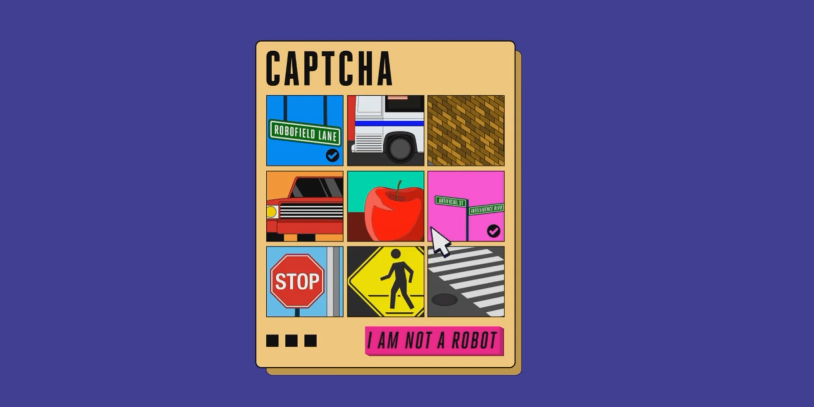

Design by TEAM 9

Solution 1 Use of personalized image captcha
Captcha , which is generally used to verify if a person is actually a person or just an AI imposter. It can be used with a littel tweaks with user's personal images can be used as a personalized image captcha as seen in Google and other famous internet compaies. This data can be personalized as the image captcha system can be personalized using third party seervice providers like ProxyCrawl API.
Solution 2 Use of biometrics for authentication
With the advancement of Smartphones use of biometrics has proved said to be one of the best ways of user authentication. Biometrics ranges from retina scan to fingerprint scanner. Even facial recognition has become a norm in today's smartphones. Going to the better quality selfie camera is used in smartphones if if the webcams used in a personal computer and laptop are also improved up to a benchmark, the solution of biometrics instead of passwords can be easily implemented everywhere.